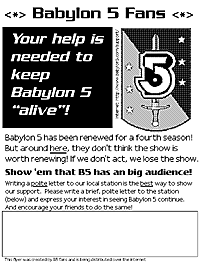

If viewers wish to keep seeing B5 locally, now is the time to campaign the stations to get
them to change their mind. Several stations have changed their minds due to fan lobbying!
Some useful things to do. Volunteer coordinators are needed for many of these efforts!
Write a polite letter to your local station, asking them to change their minds
and renew the show. (Use your own words!) Point out that ratings and demographics have been very good at
many stations, especially when the show is given a decent time slot. Many stations are moving B5 to a better
time slot for season 4, which indicates their confidence in the show.
Find some possible candidate stations to pick up the show, and ask them if they would please
pick up B5 for next Fall.
Encourage others you know to write to all these stations as well.
Organize with others on the Internet to encourage letter writing, to brainstorm, and to coordinate plans.
Create a web page that others can visit to find out what they can do to help.
Get the word out to local BBS's and computer clubs.
Bring the campaign outside of the Internet! Remember, the people who are active
on the Internet are only a fraction of total viewers in your area, and they probably don't
know that the show has been dropped.
Possible techniques include:
Make several dozen inexpensive flyers or bookmarks and distribute them to comic shops, SF/Fantasy/
Roleplaying shops, bookstores. This sample flyer can be printed out at
150 DPI, laid out 4 to a page, and photocopied. Or, design your own.
Contact the media and let them know of your efforts to bring back the show. Classifieds,
letters to the editor, phone calls, etc. could be effective.
Get the word out at any local conventions, SF-related events, SF/B5 fan clubs, or any organizations
where there may be lots of B5 viewers.
If your station doesn't have a contact person and/or mailing list, why not volunteer to do that?
You'll get fame and glory, and if you can organize with people to help, you may just manage to get the show
picked up again!
{kind=link}